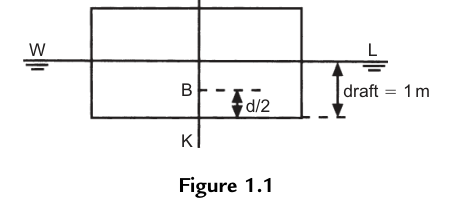
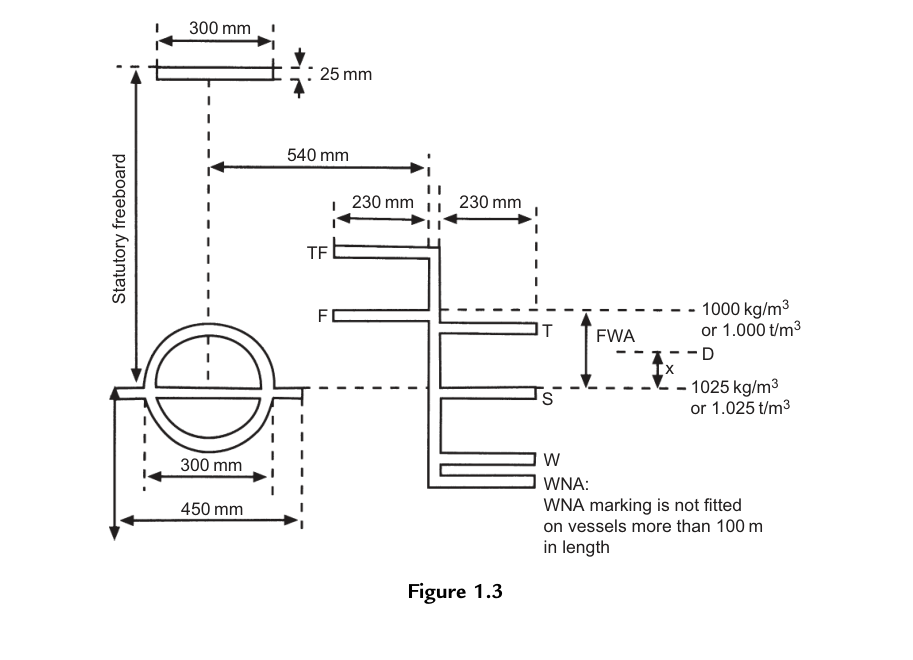

Pesos agrupados, calado de agua, calado aéreo y densidad
Group Weights, Water Draft, Air Draft, and Density
Pesos agrupados en un buque
Group Weights in a Ship
La primera estimación que realiza el arquitecto naval al diseñar un buque nuevo es calcular su lightweight o peso en rosca.
Peso en rosca
Lightweight
Es el peso del propio buque cuando se encuentra completamente vacío, con las calderas llenas hasta su nivel de trabajo. Está compuesto por el peso del acero, la madera y el equipamiento, y la maquinaria. Se determina mediante una experiencia de inclinación, normalmente poco antes de la entrega del buque nuevo. Este valor puede cambiar con el paso de los años.
Peso muerto
Deadweight
Es el peso que transporta el buque: combustible, agua dulce, provisiones, aceite lubricante, agua de lastre, tripulación y sus pertenencias, carga y pasajeros. Varía según la condición de carga.
Desplazamiento
Displacement
Es el peso del volumen de agua que desplaza el buque.
Calado de agua
Water draft
Es la distancia vertical desde la línea de flotación hasta la quilla. Si se mide hasta la parte superior de la quilla se denomina draft molded (calado de trazado); si se mide hasta la parte inferior, draft extreme (calado extremo).
Calado aéreo
Air draft
Es la distancia vertical desde la línea de flotación hasta el punto más alto del buque, cuando se encuentra a velocidad de avance cero. Indica la capacidad del buque para pasar bajo un puente.
Algunos buques utilizan mástiles telescópicos o articulados. Para calcular la carga que debe descargarse o el lastre que debe embarcarse para pasar bajo un puente, se consideran los momentos de peso y los calados finales de proa y popa. Durante la navegación también deben considerarse los efectos de squat.
Efecto del cambio de densidad cuando el desplazamiento permanece constante
Effect of Change of Density when the Displacement is Constant
Cuando un buque pasa de agua de una densidad a otra, sin que cambie su masa, el calado cambiará. El buque debe desplazar la misma masa de agua en ambos casos; como cambia la densidad, también cambia el volumen desplazado.
Si la densidad del agua aumenta, el volumen desplazado debe disminuir para mantener constante la masa, y viceversa.
Efecto en buques con forma de caja
The Effect on Box-Shaped Vessels
Efecto en buques con forma de caja
La masa nueva de agua desplazada es igual a la masa anterior. Para un cuerpo rectangular, el volumen es eslora por manga por calado.
New volume × New density = Old volume × Old density
Volume = L × B × Draft
New Draft / Old Draft = Old Density / New Density
Ejemplo 1
Example 1
Un buque tipo caja flota con calado medio de 2,1 m en agua de puerto de densidad 1020 kg/m³. Hallar el calado medio para el mismo desplazamiento en agua salada de densidad 1025 kg/m³.
New Draft = (1020 / 1025) × 2,1 = 2,09 m
Respuesta: 2,09 m.
Ejemplo 2
Example 2
Un buque tipo caja flota adrizado y con quilla a nivel en agua dulce de densidad 1000 kg/m³. El centro de carena está a 0,50 m sobre la quilla. Hallar la altura del centro de carena en agua salada de densidad 1025 kg/m³.
El centro de carena es el centro geométrico del volumen sumergido. En un buque tipo caja se encuentra a la mitad del calado:

Calado inicial = 2 × 0,50 = 1 m
Nuevo calado = (1000 / 1025) × 1 = 0,976 m
Nuevo KB = 0,976 / 2 = 0,488 m ≈ 0,49 m
Respuesta: 0,488 m, aproximadamente 0,49 m.
Efecto en buques con forma de casco
The Effect on Ship-Shaped Vessels
Efecto en buques con forma de casco
Cuando cambia la densidad del agua, cambia el calado, pero la masa de agua desplazada permanece constante. En un buque con forma de casco, el volumen sumergido no es rectangular. Para calcular el cambio de calado se utiliza la Fresh Water Allowance.
Fresh Water Allowance (FWA) — Asiento de agua dulce: número de milímetros en que cambia el calado medio cuando un buque pasa de agua salada a agua dulce, o viceversa, flotando al calado de carga.
TPC: toneladas por centímetro de inmersión.
La demostración compara la masa de agua salada desplazada con la masa de agua dulce desplazada, manteniendo igual la masa total. El desarrollo del libro obtiene que el volumen adicional en agua dulce es V/40.

La marca S indica el calado permitido en agua salada en zona de verano. La marca F indica el calado permitido en agua dulce en zona de verano. La distancia entre los bordes superiores de ambas marcas corresponde a la FWA.
Para agua de puerto se utiliza la Dock Water Allowance (DWA):
ρDW: densidad del agua de puerto.
Ejemplo 3
Example 3
Un buque carga en agua de puerto de densidad 1010 kg/m³. FWA = 150 mm. Hallar el cambio de calado al entrar en agua salada.
x = 90 mm
El calado disminuirá 90 mm (9 cm).
Ejemplo 4
Example 4
Un buque carga en zona de verano en agua de puerto de densidad 1005 kg/m³. FWA = 62,5 mm y TPC = 15 toneladas. El borde inferior de la línea de carga de verano está en la línea de flotación a babor y 5 cm por encima de la línea de flotación a estribor. Hallar cuánto más de carga puede embarcarse para quedar al calado correcto en agua salada.
El buque está escorado a babor. Al adrizarlo, el borde inferior de la marca S queda 25 mm por encima de la línea de flotación en cada costado. Considerando además el espesor de 25 mm de la línea, el calado debe aumentar 50 mm para alcanzar la marca en agua de puerto.
Aumento total = 50 + 50 = 100 mm = 10 cm
Carga = 10 × 15
Carga a embarcar = 150 toneladas
Respuesta: 150 toneladas.
Efecto de la densidad sobre el desplazamiento cuando el calado permanece constante
Effect of Density on Displacement when the Draft is Constant
Si cambia la densidad del agua sin que cambie el calado, la masa de agua desplazada también cambia. Esto puede deberse a la carga o descarga de mercancías, o al embarque o consumo de combustible y provisiones.
Example 1 — Ejemplo 1
Un buque desplaza 7000 toneladas en agua dulce. Hallar su desplazamiento al mismo calado en agua de densidad 1015 kg/m³.
= 7105 toneladas
Example 2 — Ejemplo 2
Un buque de 6400 toneladas de desplazamiento flota en agua salada. Debe dirigirse a un puesto de atraque donde la densidad es 1008 kg/m³. Hallar cuánto cargamento debe descargarse para mantener el calado.
Carga a descargar = 6400 − 6294 = 106 toneladas
Example 3 — Ejemplo 3
Un buque de 120 m × 17 m × 10 m tiene Cb = 0,800 y flota al calado de verano de 7,2 m en agua dulce. Hallar cuánto más de carga puede embarcarse para mantener el mismo calado en agua salada.
Nuevo desplazamiento = 11 750 × (1025 / 1000) = 12 044 t
Carga adicional = 12 044 − 11 750 = 294 toneladas
El libro indica que este problema no debe tratarse como uno de TPC y FWA.
Ejercicio 1 — Densidad y calado
Exercise 1 — Density and Draft
Los ejercicios se presentan siguiendo el orden del libro. Cada uno incluye el enunciado original, su traducción y el desarrollo correspondiente.
Ejercicio 1
Example / Exercise 1
A ship displaces 7500 cubic meters of water of density 1000 kg per cubic meter. Find the displacement in tonnes when the ship is floating at the same draft in water of density 1015 kg per cubic meter.
Un buque desplaza 7500 m³ de agua de densidad 1000 kg/m³. Calcular su desplazamiento en toneladas cuando flota al mismo calado en agua de densidad 1015 kg/m³.
El calado no cambia; por tanto, el desplazamiento varía en la misma proporción que la densidad.
W₂ = 7500 × (1015 / 1000)
W₂ = 7612,5 toneladas
Resultado: 7612,5 toneladas
Ejercicio 2
Example / Exercise 2
When floating in fresh water at a draft of 6.5 m a ship displaces 4288 tonnes. Find the displacement when the ship is floating at the same draft in water of density 1015 kg per cubic meter.
Un buque flota en agua dulce con un calado de 6,5 m y desplaza 4288 toneladas. Calcular su desplazamiento al mismo calado en agua de densidad 1015 kg/m³.
Se mantiene el mismo calado, por lo que aplicamos la relación entre desplazamiento y densidad.
New displacement = 4352,32 toneladas
Resultado: 4352,32 toneladas
Ejercicio 3
Example / Exercise 3
A box-shaped vessel 24 m × 6 m × 3 m displaces 150 tonnes of water. Find the draft when the vessel is floating in salt water.
Un buque con forma de caja de 24 m × 6 m × 3 m desplaza 150 toneladas de agua. Calcular el calado cuando flota en agua salada.
Tomando el desplazamiento de 150 toneladas en agua salada (densidad 1,025 t/m³), calculamos el volumen desplazado y lo dividimos por el área de la base.
Draft = Volume / (Length × Breadth)
Draft = 146,341 / (24 × 6)
Draft = 1,016 m
Resultado: 1,016 m
Ejercicio 4
Example / Exercise 4
A box-shaped vessel draws 7.5 m in dock water of density 1006 kg per cubic meter. Find the draft in salt water of density 1025 kg per cubic meter.
Un buque con forma de caja cala 7,5 m en agua de puerto de densidad 1006 kg/m³. Calcular el calado en agua salada de densidad 1025 kg/m³.
El desplazamiento permanece constante. En un buque tipo caja, el calado varía inversamente con la densidad.
New draft = 7,5 × (1006 / 1025)
New draft = 7,361 m
Resultado: 7,361 m
Ejercicio 5
Example / Exercise 5
The KB of a rectangular block that is floating in fresh water is 50 cm. Find the KB in salt water.
El KB de un bloque rectangular que flota en agua dulce es de 50 cm. Calcular el KB en agua salada.
En un bloque rectangular, el centro de carena se encuentra a la mitad del calado. Primero obtenemos el calado en agua dulce y luego lo corregimos por densidad.
New draft = 1 × (1000 / 1025) = 0,9756 m
New KB = 0,9756 / 2
New KB = 0,488 m
Resultado: 0,488 m
Ejercicio 6
Example / Exercise 6
A ship is lying at the mouth of a river in water of density 1024 kg per cubic meter and the displacement is 12,000 tonnes. The ship is to proceed up river and to berth in dock water of density 1008 kg per cubic meter with the same draft as at present. Find how much cargo must be discharged.
Un buque se encuentra en la desembocadura de un río, en agua de densidad 1024 kg/m³, con un desplazamiento de 12 000 toneladas. Debe navegar río arriba y atracar en agua de puerto de densidad 1008 kg/m³, manteniendo el mismo calado. Calcular cuánto cargamento debe descargar.
Como el calado permanece constante, el nuevo desplazamiento es proporcional a la nueva densidad.
Cargo to discharge = 12 000 − 11 812,5
Cargo to discharge = 187,5 toneladas
Resultado: 187,5 toneladas
Ejercicio 7
Example / Exercise 7
A ship arrives at the mouth of a river in water of density 1016 kg per cubic meter with a freeboard of ‘S’ m. She then discharges 150 tonnes of cargo, and proceeds up river to a second port, consuming 14 tonnes of bunkers. When she arrives at the second port the freeboard is again ‘S’ m, the density of the water being 1004 kg per cubic meter. Find the ship’s displacement on arrival at the second port.
Un buque llega a la desembocadura de un río en agua de densidad 1016 kg/m³ con un francobordo de S metros. Descarga 150 toneladas de carga y navega hacia un segundo puerto, consumiendo 14 toneladas de combustible. Al llegar, el francobordo vuelve a ser S metros y la densidad del agua es 1004 kg/m³. Calcular el desplazamiento del buque al llegar al segundo puerto.
El mismo francobordo indica el mismo calado. La pérdida de peso por descarga y consumo es 150 + 14 = 164 toneladas. Sea D₁ el desplazamiento inicial y D₂ el de llegada.
D₁ − D₂ = 164
D₁ × [1 − (1004 / 1016)] = 164
D₁ = 13 885,33 t
D₂ = 13 885,33 − 164
D₂ = 13 721,33 toneladas
Resultado: 13 721,33 toneladas
Ejercicio 8
Example / Exercise 8
A ship loads in fresh water to her salt water marks and proceeds along a river to a second port consuming 20 tonnes of bunkers. At the second port, where the density is 1016 kg per cubic meter, after 120 tonnes of cargo have been loaded, the ship is again at the load salt water marks. Find the ship’s load displacement in salt water.
Un buque carga en agua dulce hasta sus marcas de agua salada y navega por un río hacia un segundo puerto, consumiendo 20 toneladas de combustible. En el segundo puerto, donde la densidad es 1016 kg/m³, después de cargar 120 toneladas de mercancía, vuelve a encontrarse en las marcas de carga de agua salada. Calcular su desplazamiento de carga en agua salada.
El cambio neto de peso a bordo es +120 − 20 = 100 toneladas. El calado final es el mismo que el correspondiente a las marcas de agua salada.
100 = D × [(1016 − 1000) / 1025]
D = (100 × 1025) / 16
D = 6406,25 toneladas
Resultado: 6406,25 toneladas
Ejercicio 9
Example / Exercise 9
A ship’s draft is 6.40 meters forward and 6.60 meters aft. FWA = 180 mm. Density of the dock water is 1010 kg per cubic meter. If the load mean draft in salt water is 6.7 meters, find the final drafts F and A in dock water if this ship is to be loaded down to her marks and trimmed 0.15 meters by the stern (center of flotation is amidships).
El calado de un buque es 6,40 m a proa y 6,60 m a popa. FWA = 180 mm y la densidad del agua de puerto es 1010 kg/m³. Si el calado medio de carga en agua salada es 6,7 m, calcular los calados finales a proa y popa en agua de puerto, si el buque debe cargarse hasta sus marcas y quedar con un asiento de 0,15 m por popa. El centro de flotación está a mitad de la eslora.
Calculamos primero la Dock Water Allowance. Luego aplicamos el asiento de 0,15 m, repartido por igual a proa y popa porque el centro de flotación está a mitad de la eslora.
DWA = 180 × (1025 − 1010) / 25 = 108 mm = 0,108 m
Mean draft in dock water = 6,7 + 0,108 = 6,808 m
Half trim = 0,15 / 2 = 0,075 m
Forward draft = 6,808 − 0,075 = 6,733 m
Aft draft = 6,808 + 0,075 = 6,883 m
Resultado: Proa: 6,733 m · Popa: 6,883 m
Ejercicio 10
Example / Exercise 10
A ship floating in dock water of density 1005 kg per cubic meter has the lower edge of her Summer load line in the waterline to starboard and 50 mm above the waterline to port. FWA = 175 mm and TPC = 12 tonnes. Find the amount of cargo that can yet be loaded in order to bring the ship to the load draft in salt water.
Un buque flota en agua de puerto de densidad 1005 kg/m³. El borde inferior de su línea de carga de verano coincide con la línea de flotación a estribor y está 50 mm por encima de ella a babor. FWA = 175 mm y TPC = 12 toneladas. Calcular cuánto cargamento adicional puede embarcarse para llevar el buque al calado de carga en agua salada.
Calculamos la DWA. La diferencia de 50 mm por escora representa 25 mm al adrizar el buque; además, se considera el espesor de 25 mm de la línea de carga.
Corrección por escora al adrizar = 50 / 2 = 25 mm
Espesor de la línea = 25 mm
Aumento total de calado = 140 + 25 + 25 = 190 mm = 19 cm
Cargo = 19 × TPC = 19 × 12
Cargo adicional = 228 toneladas
Resultado: 228 toneladas
Ejercicio 11
Example / Exercise 11
A ship is floating at 8 meters mean draft in dock water of relative density 1.01. TPC = 15 tonnes and FWA = 150 mm. The maximum permissible draft in salt water is 8.1 m. Find the amount of cargo yet to load.
Un buque flota con un calado medio de 8 m en agua de puerto de densidad relativa 1,01. TPC = 15 toneladas y FWA = 150 mm. El calado máximo permitido en agua salada es 8,1 m. Calcular cuánto cargamento adicional puede embarcarse.
La densidad relativa 1,01 equivale a 1010 kg/m³. Calculamos la DWA y convertimos el calado actual a su equivalente en agua salada para conocer el margen disponible.
Draft equivalent in salt water = 8,00 − 0,09 = 7,91 m
Available draft = 8,10 − 7,91 = 0,19 m = 19 cm
Cargo = 19 × 15
Cargo yet to load = 285 toneladas
Resultado: 285 toneladas
Ejercicio 12
Example / Exercise 12
A ship’s light displacement is 3450 tonnes and she has on board 800 tonnes of bunkers. She loads 7250 tonnes of cargo, 250 tonnes of bunkers, and 125 tonnes of fresh water. The ship is then found to be 75 mm from the load draft. TPC = 12 tonnes. Find the ship’s deadweight and load displacement.
El desplazamiento en rosca de un buque es de 3450 toneladas y tiene a bordo 800 toneladas de combustible. Embarca 7250 toneladas de carga, 250 toneladas adicionales de combustible y 125 toneladas de agua dulce. Luego se determina que está a 75 mm de alcanzar el calado de carga. TPC = 12 toneladas. Calcular el peso muerto y el desplazamiento de carga.
Primero sumamos los pesos variables que lleva a bordo. Después calculamos el peso que falta para alcanzar el calado de carga mediante el TPC.
Remaining draft = 75 mm = 7,5 cm
Additional weight = 7,5 × 12 = 90 t
Load deadweight = 8425 + 90 = 8515 t
Load displacement = Lightweight + Deadweight = 3450 + 8515
Load displacement = 11 965 toneladas
Resultado: Peso muerto: 8515 t · Desplazamiento de carga: 11 965 t
Ejercicio 13
Example / Exercise 13
A ship has a load displacement of 5400 tonnes. TPC = 30 tonnes. If she loads to the Summer load line in dock water of density 1010 kg per cubic meter, find the change in draft on entering salt water of density 1025 kg per cubic meter.
Un buque tiene un desplazamiento de carga de 5400 toneladas y un TPC de 30 toneladas. Si carga hasta la línea de carga de verano en agua de puerto de densidad 1010 kg/m³, calcular el cambio de calado al entrar en agua salada de densidad 1025 kg/m³.
Primero calculamos la FWA a partir del desplazamiento y el TPC. Después obtenemos la DWA correspondiente al agua de puerto.
DWA = 45 × (1025 − 1010) / 25
DWA = 27 mm
Resultado: El calado disminuirá 27 mm al entrar en agua salada
Ejercicio 14
Example / Exercise 14
A ship’s FWA is 160 mm, and she is floating in dock water of density 1012 kg per cubic meter. Find the change in draft when she passes from dock water to salt water.
La FWA de un buque es de 160 mm y está flotando en agua de puerto de densidad 1012 kg/m³. Calcular el cambio de calado cuando pasa de agua de puerto a agua salada.
Aplicamos directamente la relación de Dock Water Allowance.
DWA = 160 × (1025 − 1012) / 25
DWA = 83,2 mm
Resultado: El calado disminuirá 83,2 mm al pasar a agua salada